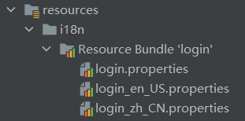
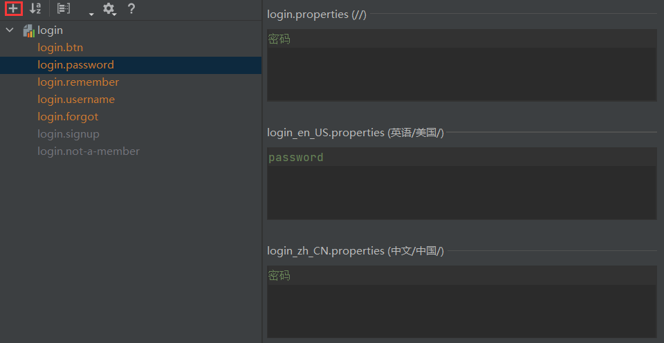
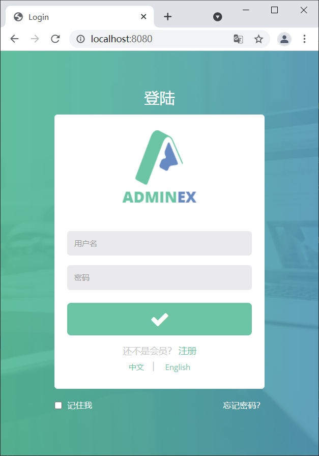
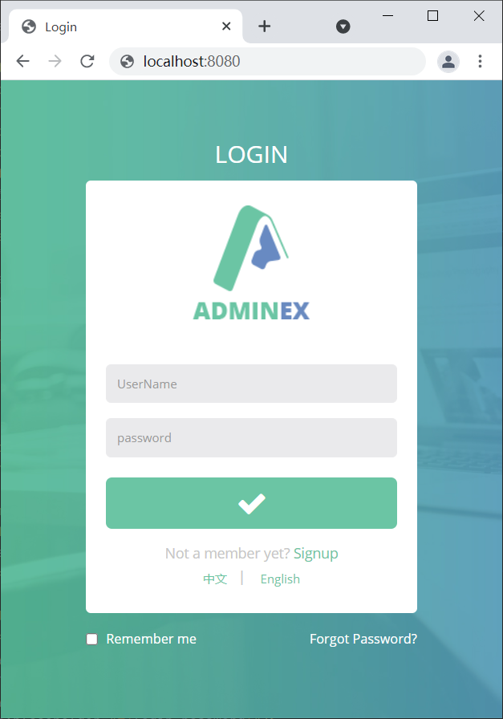
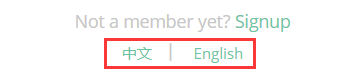
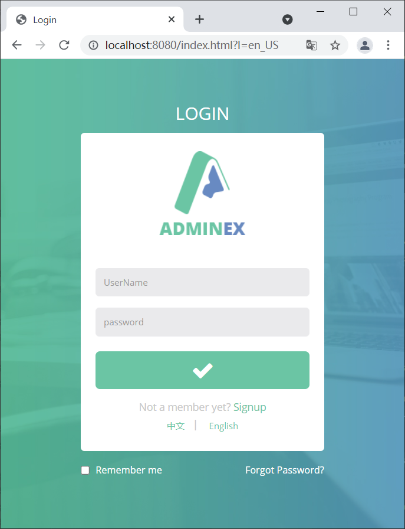
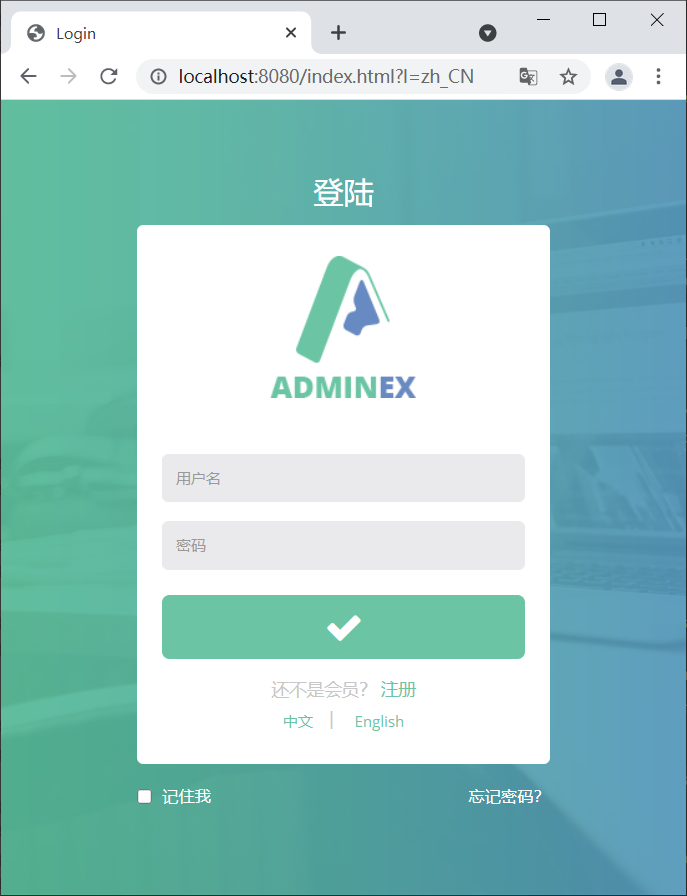

Spring Boot国际化
国际化（Internationalization 简称 I18n，其中“I”和“n”分别为首末字符，18 则为中间的字符数）是指软件开发时应该具备支持多种语言和地区的功能。换句话说就是，开发的软件需要能同时应对不同国家和地区的用户访问，并根据用户地区和语言习惯，提供相应的、符合用具阅读习惯的页面和数据，例如，为中国用户提供汉语界面显示，为美国用户提供提供英语界面显示。
在 Spring 项目中实现国际化，通常需要以下 3 步：
以 spring-boot-springmvc-demo1为例，在 src/main/resources 下创建一个 i18n 的目录，并在该目录中按照国际化资源文件命名格式分别创建以下三个文件，
以上国际化资源文件创建完成后，IDEA 会自动识别它们，并转换成如下的模式：
打开任意一个国际化资源文件，并切换为 Resource Bundle 模式，然后点击“+”号，创建所需的国际化属性，如下图。
Spring Boot 通过 MessageSourceAutoConfiguration 对 ResourceBundleMessageSource 提供了默认配置，其部分源码如下。
从以上源码可知：
查看 MessageSourceProperties 类，其代码如下。
通过以上代码，我们可以得到以下 3 点信息：
通过以上源码分析可知，Spring Boot 已经对国际化资源文件的管理提供了默认自动配置，我们这里只需要在 Spring Boot 全局配置文件中，使用配置参数“spring.messages.basename”指定我们自定义的国际资源文件的基本名即可，代码如下（当指定多个资源文件时，用逗号分隔）。
以 spring-boot-adminex 为例，在 login.html 中获取国际化内容，代码如下。
将浏览器语言切换为英文，再次访问登陆页，结果如下图。
我们可以通过以上两个对象对区域信息的切换，以达到切换语言的目的。
Spring Boot 在 WebMvcAutoConfiguration 中为区域信息解析器（LocaleResolver）进行了自动配置，源码如下。
从以上源码可知：
2. 在 net.biancheng.www 下创建一个 component 包，并在该包中创建一个区域信息解析器 MyLocalResolver，代码如下。
3. 在 net.biancheng.www.config 的 MyMvcConfig 中添加以下方法，将自定义的区域信息解析器以组件的形式添加到容器中，代码如下。
4. 启动 Spring Boot，访问登录页 login.html，结果如下图。
5. 点击页面最下方的“English”链接，将语言切换到英语，结果如下图。
6. 点击页面最下方的“中文”链接，将语言切换到中文，结果如下图。
在 Spring 项目中实现国际化，通常需要以下 3 步：
- 编写国际化资源（配置）文件；
- 使用 ResourceBundleMessageSource 管理国际化资源文件；
- 在页面获取国际化内容。
1. 编写国际化资源文件
在 Spring Boot 的类路径下创建国际化资源文件，文件名格式为：基本名_语言代码_国家或地区代码，例如 login_en_US.properties、login_zh_CN.properties。以 spring-boot-springmvc-demo1为例，在 src/main/resources 下创建一个 i18n 的目录，并在该目录中按照国际化资源文件命名格式分别创建以下三个文件，
- login.properties：无语言设置时生效
- login_en_US.properties ：英语时生效
- login_zh_CN.properties：中文时生效
以上国际化资源文件创建完成后，IDEA 会自动识别它们，并转换成如下的模式：

图1：国际化资源文件
打开任意一个国际化资源文件，并切换为 Resource Bundle 模式，然后点击“+”号，创建所需的国际化属性，如下图。

图2：编辑国际化资源文件
2. 使用 ResourceBundleMessageSource 管理国际化资源文件
Spring Boot 已经对 ResourceBundleMessageSource 提供了默认的自动配置。Spring Boot 通过 MessageSourceAutoConfiguration 对 ResourceBundleMessageSource 提供了默认配置，其部分源码如下。
@Configuration(proxyBeanMethods = false)
@ConditionalOnMissingBean(name = AbstractApplicationContext.MESSAGE_SOURCE_BEAN_NAME, search = SearchStrategy.CURRENT)
@AutoConfigureOrder(Ordered.HIGHEST_PRECEDENCE)
@Conditional(org.springframework.boot.autoconfigure.context.MessageSourceAutoConfiguration.ResourceBundleCondition.class)
@EnableConfigurationProperties
public class MessageSourceAutoConfiguration {
private static final Resource[] NO_RESOURCES = {};
// 将 MessageSourceProperties 以组件的形式添加到容器中
// MessageSourceProperties 下的每个属性都与以 spring.messages 开头的属性对应
@Bean
@ConfigurationProperties(prefix = "spring.messages")
public MessageSourceProperties messageSourceProperties() {
return new MessageSourceProperties();
}
//Spring Boot 会从容器中获取 MessageSourceProperties
// 读取国际化资源文件的 basename（基本名）、encoding（编码）等信息
// 并封装到 ResourceBundleMessageSource 中
@Bean
public MessageSource messageSource(MessageSourceProperties properties) {
ResourceBundleMessageSource messageSource = new ResourceBundleMessageSource();
//读取国际化资源文件的 basename (基本名),并封装到 ResourceBundleMessageSource 中
if (StringUtils.hasText(properties.getBasename())) {
messageSource.setBasenames(StringUtils
.commaDelimitedListToStringArray(StringUtils.trimAllWhitespace(properties.getBasename())));
}
//读取国际化资源文件的 encoding (编码),并封装到 ResourceBundleMessageSource 中
if (properties.getEncoding() != null) {
messageSource.setDefaultEncoding(properties.getEncoding().name());
}
messageSource.setFallbackToSystemLocale(properties.isFallbackToSystemLocale());
Duration cacheDuration = properties.getCacheDuration();
if (cacheDuration != null) {
messageSource.setCacheMillis(cacheDuration.toMillis());
}
messageSource.setAlwaysUseMessageFormat(properties.isAlwaysUseMessageFormat());
messageSource.setUseCodeAsDefaultMessage(properties.isUseCodeAsDefaultMessage());
return messageSource;
}
...
}
从以上源码可知：
- Spring Boot 将 MessageSourceProperties 以组件的形式添加到容器中；
- MessageSourceProperties 的属性与配置文件中以“spring.messages”开头的配置进行了绑定；
- Spring Boot 从容器中获取 MessageSourceProperties 组件，并从中读取国际化资源文件的 basename（文件基本名）、encoding（编码）等信息，将它们封装到 ResourceBundleMessageSource 中；
- Spring Boot 将 ResourceBundleMessageSource 以组件的形式添加到容器中，进而实现对国际化资源文件的管理。
查看 MessageSourceProperties 类，其代码如下。
public class MessageSourceProperties {
private String basename = "messages";
private Charset encoding;
@DurationUnit(ChronoUnit.SECONDS)
private Duration cacheDuration;
private boolean fallbackToSystemLocale;
private boolean alwaysUseMessageFormat;
private boolean useCodeAsDefaultMessage;
public MessageSourceProperties() {
this.encoding = StandardCharsets.UTF_8;
this.fallbackToSystemLocale = true;
this.alwaysUseMessageFormat = false;
this.useCodeAsDefaultMessage = false;
}
...
}
通过以上代码，我们可以得到以下 3 点信息：
- MessageSourceProperties 为 basename、encoding 等属性提供了默认值；
- basename 表示国际化资源文件的基本名，其默认取值为“message”，即 Spring Boot 默认会获取类路径下的 message.properties 以及 message_XXX.properties 作为国际化资源文件；
- 在 application.porperties/yml 等配置文件中，使用配置参数“spring.messages.basename”即可重新指定国际化资源文件的基本名。
通过以上源码分析可知，Spring Boot 已经对国际化资源文件的管理提供了默认自动配置，我们这里只需要在 Spring Boot 全局配置文件中，使用配置参数“spring.messages.basename”指定我们自定义的国际资源文件的基本名即可，代码如下（当指定多个资源文件时，用逗号分隔）。
spring.messages.basename=i18n.login
3. 获取国际化内容
由于页面使用的是 Tymeleaf 模板引擎，因此我们可以通过表达式 #{...} 获取国际化内容。以 spring-boot-adminex 为例，在 login.html 中获取国际化内容，代码如下。
<!DOCTYPE html>
<html lang="en" xmlns:th="http://www.thymeleaf.org">
<head>
<meta charset="utf-8">
<meta name="viewport" content="width=device-width, initial-scale=1.0, maximum-scale=1.0">
<meta name="description" content="">
<meta name="author" content="ThemeBucket">
<link rel="shortcut icon" href="#" type="image/png">
<title>Login</title>
<!--将js css 等静态资源的引用修改为 绝对路径-->
<link href="css/style.css" th:href="@{/css/style.css}" rel="stylesheet">
<link href="css/style-responsive.css" th:href="@{/css/style-responsive.css}" rel="stylesheet">
<!-- HTML5 shim and Respond.js IE8 support of HTML5 elements and media queries -->
<!--[if lt IE 9]>
<script src="js/html5shiv.js" th:src="@{/js/html5shiv.js}"></script>
<script src="js/respond.min.js" th:src="@{/js/respond.min.js}"></script>
<![endif]-->
</head>
<body class="login-body">
<div class="container">
<form class="form-signin" th:action="@{/user/login}" method="post">
<div class="form-signin-heading text-center">
<h1 class="sign-title" th:text="#{login.btn}">Sign In</h1>
<img src="/images/login-logo.png" th:src="@{/images/login-logo.png}" alt=""/>
</div>
<div class="login-wrap">
<p style="color: red" th:text="${msg}" th:if="${not #strings.isEmpty(msg)}"></p>
<input type="text" class="form-control" name="username" placeholder="User ID" autofocus
th:placeholder="#{login.username}"/>
<input type="password" class="form-control" name="password" placeholder="Password"
th:placeholder="#{login.password}"/>
<label class="checkbox">
<input type="checkbox" value="remember-me" th:text="#{login.remember}">
<span class="pull-right">
<a data-toggle="modal" href="#myModal" th:text="#{login.forgot}"> </a>
</span>
</label>
<button class="btn btn-lg btn-login btn-block" type="submit">
<i class="fa fa-check"></i>
</button>
<div class="registration">
<!--Thymeleaf 行内写法-->
[[#{login.not-a-member}]]
<a class="" href="/registration.html" th:href="@{/registration.html}">
[[#{login.signup}]]
</a>
<!--thymeleaf 模板引擎的参数用（）代替 ？-->
<br/>
<a class="btn btn-sm" th:href="@{/index.html(l='zh_CN')}">中文</a>|
<a class="btn btn-sm" th:href="@{/index.html(l='en_US')}">English</a>
</div>
</div>
<!-- Modal -->
<div aria-hidden="true" aria-labelledby="myModalLabel" role="dialog" tabindex="-1" id="myModal"
class="modal fade">
<div class="modal-dialog">
<div class="modal-content">
<div class="modal-header">
<button type="button" class="close" data-dismiss="modal" aria-hidden="true">×</button>
<h4 class="modal-title">Forgot Password ?</h4>
</div>
<div class="modal-body">
<p>Enter your e-mail address below to reset your password.</p>
<input type="text" name="email" placeholder="Email" autocomplete="off"
class="form-control placeholder-no-fix">
</div>
<div class="modal-footer">
<button data-dismiss="modal" class="btn btn-default" type="button">Cancel</button>
<button class="btn btn-primary" type="button">Submit</button>
</div>
</div>
</div>
</div>
<!-- modal -->
</form>
</div>
<!-- Placed js at the end of the document so the pages load faster -->
<!-- Placed js at the end of the document so the pages load faster -->
<script src="js/jquery-1.10.2.min.js" th:src="@{/js/jquery-1.10.2.min.js}"></script>
<script src="js/bootstrap.min.js" th:src="@{/js/bootstrap.min.js}"></script>
<script src="js/modernizr.min.js" th:src="@{/js/modernizr.min.js}"></script>
</body>
</html>
验证
启动 Spring Boot，使用浏览器访问登陆页，此时浏览器默认使用中文，结果如下图。

图3：中文登陆页
将浏览器语言切换为英文，再次访问登陆页，结果如下图。

图4：英文登录页（猛击图片，查看原图）
手动切换语言
如下图所示，在登陆页（login.html）最下方有两个切换语言的链接，想要通过点击它们来切换进行国际化的语言，该怎么做呢？

图5：切换语言按钮
区域信息解析器自动配置
我们知道，Spring MVC 进行国际化时有 2 个十分重要的对象：- Locale：区域信息对象
- LocaleResolver：区域信息解析器，容器中的组件，负责获取区域信息对象
我们可以通过以上两个对象对区域信息的切换，以达到切换语言的目的。
Spring Boot 在 WebMvcAutoConfiguration 中为区域信息解析器（LocaleResolver）进行了自动配置，源码如下。
@Bean
@ConditionalOnMissingBean(name = DispatcherServlet.LOCALE_RESOLVER_BEAN_NAME)
@SuppressWarnings("deprecation")
public LocaleResolver localeResolver() {
if (this.webProperties.getLocaleResolver() == WebProperties.LocaleResolver.FIXED) {
return new FixedLocaleResolver(this.webProperties.getLocale());
}
if (this.mvcProperties.getLocaleResolver() == WebMvcProperties.LocaleResolver.FIXED) {
return new FixedLocaleResolver(this.mvcProperties.getLocale());
}
AcceptHeaderLocaleResolver localeResolver = new AcceptHeaderLocaleResolver();
Locale locale = (this.webProperties.getLocale() != null) ? this.webProperties.getLocale()
: this.mvcProperties.getLocale();
localeResolver.setDefaultLocale(locale);
return localeResolver;
}
从以上源码可知：
- 该方法默认向容器中添加了一个区域信息解析器（LocaleResolver）组件，它会根据请求头中携带的“Accept-Language”参数，获取相应区域信息（Locale）对象。
- 该方法上使用了 @ConditionalOnMissingBean 注解，其参数 name 的取值为 localeResolver（与该方法注入到容器中的组件名称一致），该注解的含义为：当容器中不存在名称为 localResolver 组件时，该方法才会生效。换句话说，当我们手动向容器中添加一个名为“localeResolver”的组件时，Spring Boot 自动配置的区域信息解析器会失效，而我们定义的区域信息解析器则会生效。
手动切换语言
1. 修改 login.html 切换语言链接，在请求中携带国际化区域信息，代码如下。
<!--thymeleaf 模板引擎的参数用（）代替 ？-->
<a class="btn btn-sm" th:href="@{/index.html(l='zh_CN')}">中文</a>|
<a class="btn btn-sm" th:href="@{/index.html(l='en_US')}">English</a>
2. 在 net.biancheng.www 下创建一个 component 包，并在该包中创建一个区域信息解析器 MyLocalResolver，代码如下。
package net.biancheng.www.componet;
import org.springframework.util.StringUtils;
import org.springframework.web.servlet.LocaleResolver;
import javax.servlet.http.HttpServletRequest;
import javax.servlet.http.HttpServletResponse;
import java.util.Locale;
//自定义区域信息解析器
public class MyLocalResolver implements LocaleResolver {
@Override
public Locale resolveLocale(HttpServletRequest request) {
//获取请求中参数
String l = request.getParameter("l");
//获取默认的区域信息解析器
Locale locale = Locale.getDefault();
//根据请求中的参数重新构造区域信息对象
if (StringUtils.hasText(l)) {
String[] s = l.split("_");
locale = new Locale(s[0], s[1]);
}
return locale;
}
@Override
public void setLocale(HttpServletRequest request, HttpServletResponse response, Locale locale) {
}
}
3. 在 net.biancheng.www.config 的 MyMvcConfig 中添加以下方法，将自定义的区域信息解析器以组件的形式添加到容器中，代码如下。
//将自定义的区域信息解析器以组件的形式添加到容器中
@Bean
public LocaleResolver localeResolver(){
return new MyLocalResolver();
}
4. 启动 Spring Boot，访问登录页 login.html，结果如下图。
图6：默认登陆页
5. 点击页面最下方的“English”链接，将语言切换到英语，结果如下图。

图7：切换国家化语言为英语
6. 点击页面最下方的“中文”链接，将语言切换到中文，结果如下图。

图8：切换语言为中文
关注公众号「站长严长生」，在手机上阅读所有教程，随时随地都能学习。内含一款搜索神器，免费下载全网书籍和视频。

微信扫码关注公众号